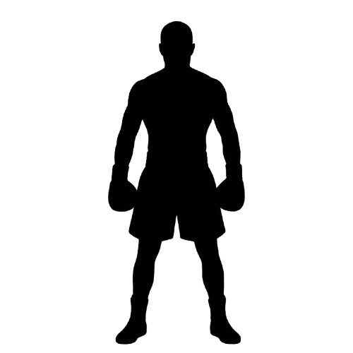
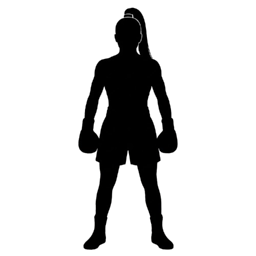

Tu boxeador


Armá al peleador escribiendo el selector CSS o XPath correcto
| Selector | Ejemplo | Descripción |
|---|---|---|
| .class | .mi-clase | Selecciona todos los elementos que contienen la clase. |
| class1.class2 | .mi-clase.mi-otra-clase | Selecciona todos los elementos que contienen ambas clases. |
| .class1 .class2 | .mi-clase .mi-otra-clase | Selecciona todos los elementos que se encuentren dentro de la class1 y que contienen class2. |
| #id | #mi-id | Selecciona todos los elementos que contienen el id. |
| element | div | Selecciona todos los elementos igual al ingresado. |
| element.class | p .mi-clase | Selecciona todos los elementos igual al ingresado y que contenga dicha clase. |
| element, element | div, p | Selecciona todos los elementos que se encuentran antes de la coma, más los que se encuentran luego de la coma. |
| element element | div div div div p | Selecciona el último elemento accediendo por orden jerárquico de izquierda a derecha. |
| element > element | div > p | Selecciona el elemento que es hijo directo (un único nivel) del anterior. |
| [attribute] | [data-qa] | Selecciona los elementos que contengan dicho atributo. |
| [attribute=value] | [style="background-color:green;"] | Selecciona los elementos que contengan dicho valor exacto en el atributo elegido. |
| [attribute~=value] | [data-tags~="practica"] | Selecciona los elementos donde el atributo contenga esa palabra completa dentro de una lista separada por espacios. |
| [attribute|=value] | [style|="background"] | Selecciona los elementos que contengan ese valor exacto, o ese valor seguido de un guion, en el atributo. |
| [attribute^=value] | a[href^="https"] | Selecciona los elementos cuyo atributo comience con el valor ingresado. |
| [attribute$=value] | a[href$=".uy/"] | Selecciona los elementos cuyo atributo finalice con el valor ingresado. |
| [attribute*=value] | a[href*="ces"] | Selecciona todos los elementos cuyo atributo contenga el valor ingresado en cualquier parte. |
| Selector | Ejemplo | Descripción |
|---|---|---|
| nodename | div | Selecciona todos los nodos con el nombre "nodename". |
| / | /html/body/div/div/div /html/body/div/div/div[1] | Selecciona desde el nodo raíz (ruta absoluta). |
| // | //a | Selecciona nodos en cualquier parte del documento, sin importar dónde se encuentren. |
| // / | //div/a | Entra a un nodo hijo desde un nodo padre, sin importar dónde está el padre. |
| . | //body/div/div/div/. | Selecciona el nodo actual. |
| .. | //body/div/div/div/.. | Selecciona el padre del nodo actual. |
| @ | //a[@href='https://www.ces.com.uy/'] | Selecciona atributos en vez de elementos. |
| [condición] | //div[p="Link roto: "] | Selecciona todos los elementos que cumplen la condición indicada. |


Cargando…
Completaste los 25 rounds y recorriste todas las técnicas de las tablas de CSS y XPath.
Volvé a abrir esta página cuando quieras repasar cualquier técnica.